Senior team, not a marketplace.
Three co-founders own architecture through deployment. No staff augmentation, no offshore handoff. Same people in week 1 and week 12.
radius · 12 pxWHY US · 01 / 03
A technical-engineering posture: type, grid, structure do most of the work; ASCII art and live code do the rest. No ambient blobs, no decorative gradients, no flourish for its own sake. Aligned with how Vercel, Linear, Stripe and supermemory build, not how agencies pose.
Switzer carries display and body — a humanist grotesque by Indian Type Foundry in Ahmedabad. JetBrains Mono carries eyebrows, numbers, and anything that wants to read as data. No serif. No italics. The structure does the work the flourishes would.
Tokens, never raw hex. #296ff0 — derived from the M-mark logo — is the only color that does branding work. Service categories use quieter, more institutional hues to label themselves inside their own contexts. They never appear in nav, footer, hero, or buttons.
Used only inside their own pillar contexts — service hub pages, the trefoil glyph, the accordion accent bar, a small marker next to the pillar name. Never in nav, footer, eyebrows on the homepage, or chrome. They mark categories the way Stripe marks API method colors — functional, not brand.
Where the service category colors actually appear. New pillar-tinted UI must update services-data.ts and must justify itself against the four allowed surfaces above.
Every spacing value lives on the scale. No intermediates. Mix vertical rhythm by stepping up; never invent 22px when 24 or 32 will do.
Card variants default, featured, and quote all take radius-lg. featured earns its distinction from a 3px left accent bar, not a bigger radius. Buttons are square — radius-0 is the Bauhaus restraint.
Shadows are reserved for surfaces that genuinely lift off the canvas — card hover, dropdown, modal. Default separation is a 1px border.
Motion happens once and stops. Only the trust-bar marquee, the orb HUD blink, and the hero scroll-cue loop — and the last is at-top-only. Everything else is IO-gated, single-fire, reduced-motion-honored.
Your anchors lean on scroll. Linear's sticky stacks, Stripe's pinned API explainer, Vercel's reveal cadence, supermemory's section transitions. Locked stack below — all open-source, all aligned with the one-shot rule (scroll plays the animation; it doesn't replay it).
Every section wraps in <Section>. Vertical padding is locked to py-[48/64/72] at sm/md/lg. Horizontal padding follows the six-step PR #33 chain. Content caps at one of four max-widths.
Bauhaus restraint. Radius-0, flat fills, no gradients, no shadow growth on hover. The split-arrow primary is our one distinctive button mark — never apply it to ghost or secondary.
15 px / weight 600 / -0.01em tracking at md and lg. 13 px at sm. All buttons render font-feature-settings: 'tnum' — tabular numerals are part of the technical-blueprint posture.
$12,480.50 · 25+ products · 7 chains · 4–12 weeks · v1.0.0 · 2026-05-21
Hover lifts -2px, tints the border at brand/30, adds shadow.sm. 250 ms (duration.fast). Featured cards gain a 3px left bar in the pillar color.
Three co-founders own architecture through deployment. No staff augmentation, no offshore handoff. Same people in week 1 and week 12.
7 chains shipped — Ethereum, Solana, Base, Arbitrum, Hyperledger, Polygon, Avalanche. 25+ products in production.
They shipped our staking vault in 9 weeks. Audit-ready, monitored, handed over with runbooks. We rebuilt the rest of our stack around their style.
Static white "chrome" strip + brand-on-canvas body. Signature pattern from section-problem.md.
Every interactive primitive ships all seven. No exceptions. Loading and error are the two most-forgotten — they ship.
No three-color hub-and-spoke. No glowing hero orb. The signature is type-as-image — ASCII art and ASCII video, rendered from real source material. None of our anchors use this. That's the point — it's what makes us recognizable in a sea of monochrome engineering-premium sites.
$ spec.delivery weeks_to_first_ship: 4 weeks_to_handover: 12 team_size: 3 pillars: web3 · ai · studio $ ok
The M-mark is the brand. Brand-blue square + Switzer medium wordmark. Founder portraits are pure-CSS dashed blueprint frames around an SVG monogram or photo. Client wall shipped greyscale, full-color on hover.
Pure-CSS dashed blueprint frame around portrait SVG. Square (radius-0) LinkedIn + X buttons in brand blue — never the platform-native colors.
Greyscale at rest, full colour on hover. Marquee at 24 s linear — the only approved infinite animation outside the orb HUD blink.

Hard constraints first. Sections may deviate when a signature visual demands it — log the deviation at docs/superpowers/specs/<date>-section-<name>.md.
From uploads/writing-guardrails.md. LLMs regress to the statistical mean — these words and constructions are how that mean reveals itself. Specific over impressive.
Dark mode redesigns surfaces; it doesn't invert them. Brand #296ff0 stays — it pops more on dark, no shift needed. Category colors lift one tier so they hold AA contrast at body sizes. Toggle sits top-right in the nav; preference persists in localStorage; prefers-color-scheme is the first-visit default.